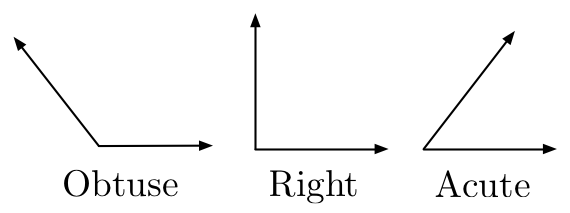
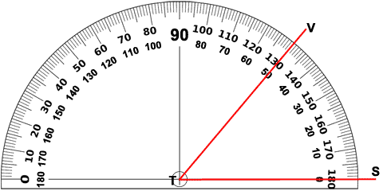

What are Angles?
An angle is formed when two lines meet at a point. The size of the angle is measured in degrees (°).
Example: The angle formed by the hands of a clock when it shows 3:00 is a right angle (90°).
Types of Angles
There are three types of angles:
Right Angle (90°): A right angle is an L-shape, like the corner of a piece of paper. Example: A square has four right angles.
Acute Angle (<90°): An acute angle is smaller than a right angle. It’s sharp and pointy. Example: A 30° angle.
Obtuse Angle (>90° but <180°): An obtuse angle is bigger than a right angle but smaller than a straight line. Example: A 120° angle.

How to Measure Angles
You can measure angles using a protractor:
- Place the center of the protractor on the point where the lines meet (the vertex).
- Read the number on the protractor that lines up with the other line.
Example: If the measurement is less than 90°, it’s an acute angle. Exactly 90° is a right angle, and anything larger than 90° but smaller than 180° is obtuse.
